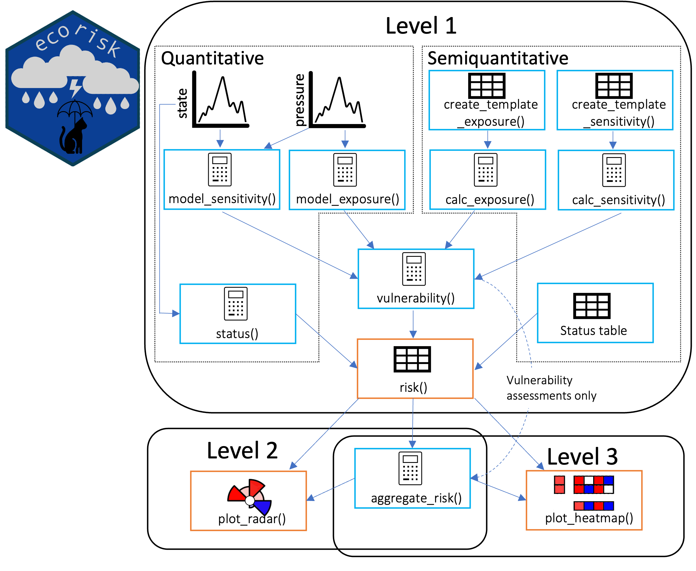

Overview
ecorisk is an R package operationalizing a modular risk assessment framework for ecosystem-based management. It supports semiquantitative expert scoring approaches as well as quantitative time-series analysis — and allows both to be combined in one integrated assessment.
Key features:
- Risk assessments from single indicator–pressure combinations up to full ecosystem scale
- Integration of expert knowledge and time-series modelling in one framework
- Explicit uncertainty assessment throughout all steps
- Applicable to marine and terrestrial ecosystems
- Publication-ready visualizations via
plot_radar()andplot_heatmap()
The ecorisk workflow consists of two parallel pathways (expert scoring and modelling) that are joined for vulnerability and risk calculation, and can then be aggregated to multi-pressure, multi-indicator, and ecosystem risk scores:

Installation
Install the released version from CRAN:
install.packages("ecorisk")Or install the development version from GitHub using the pak package:
# install.packages("pak")
pak::pak("HeleneGutte/ecorisk")Usage
A full tutorial using the provided demo datasets is available in the package vignette:
vignette("ecorisk")Further background on the risk assessment framework and step-by-step function documentation are available on the package website.
Citation
If you use the ecorisk package, please cite it using:
citation("ecorisk")
#> To cite package 'ecorisk' in publications use:
#>
#> Gutte H, Otto S (2026). _ecorisk: Risk Assessments for Ecosystems or
#> Ecosystem Components_. R package version 0.3.1,
#> <https://github.com/HeleneGutte/ecorisk>.
#>
#> A BibTeX entry for LaTeX users is
#>
#> @Manual{,
#> title = {ecorisk: Risk Assessments for Ecosystems or Ecosystem Components},
#> author = {Helene Gutte and Saskia A. Otto},
#> year = {2026},
#> note = {R package version 0.3.1},
#> url = {https://github.com/HeleneGutte/ecorisk},
#> }If you use the ecorisk framework or methodology, please also cite the accompanying software paper:
Gutte, H.M., Möllmann, C. & Otto, S.A. (2026). ecorisk: A modular R tool for ecological risk assessment analysis. SoftwareX, 34, 102612. https://doi.org/10.1016/j.softx.2026.102612